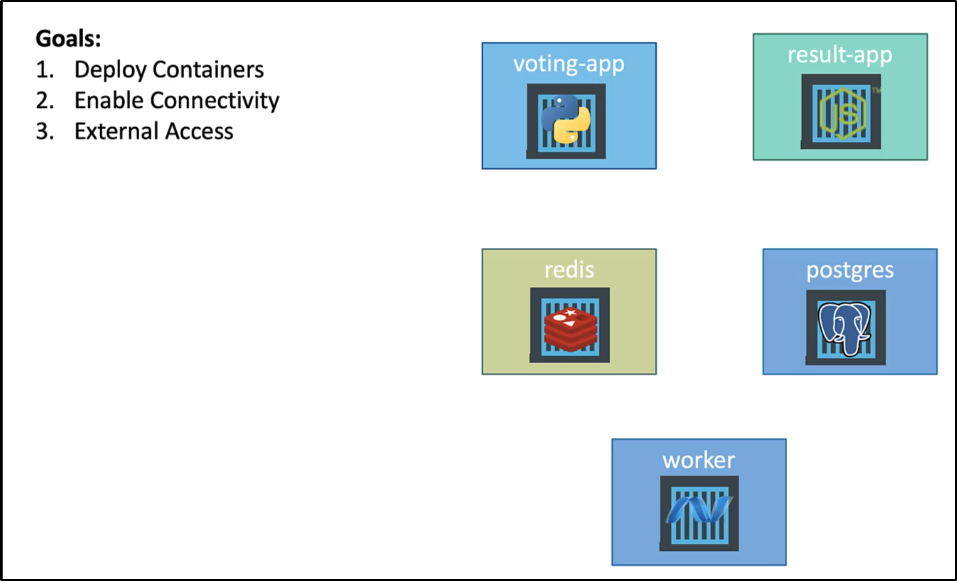

Abbiamo visto prima come funziona l'applicazione su Docker.
Ora vediamo come Deployarla su Kubernetes.
Dobbiamo avere una chiara idea di cosa fare prima di procedere.
Quindi meglio scrivere gli obiettivi in modo chiaro:

Sappiamo che non possiamo deployare direttamente i Container su Kubernetes.
Gli oggetti più piccoli che possiamo creare su Kubernetes sono i PODs.
Inoltre, dobbiamo vedere come permettere la connettività dei PODs. Inoltre, notiamo che la Worker app non è dipendente da nessun'altra opzione:
semplicemente legge e scrive ma non è richiesta da nessun'altra app in modo diretto.
Quindi: come agire? Il primo passo sarebbe di creare un ClusterIP Service,
per far si che REDIS sia accessibile sia dalla Voting-App che da Worker. ClusterIP perché non devono essere esposti fuori in modo diretto, ma solo nel Cluster.
Inoltre, dobbiamo dare un nome a questo servizio e chiamarlo nel modo
hardcoded del codice "redis"
NB: Non è buona prassi l'hardcoding, dovresti usare variabili di ambiente ed altre cose così, in modo da rendere il tutto più dinamico.
La stessa cosa la facciamo per il servizio di PostgreSQL.
Inoltre, assicuriamoci di passare in modo corretto anche le credenziali per il database.
Infine, dobbiamo solo creare i NodePort per esporre le 2 webapp: